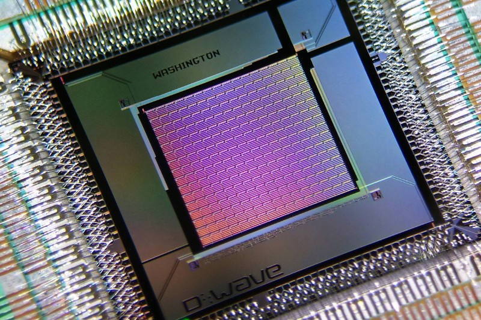
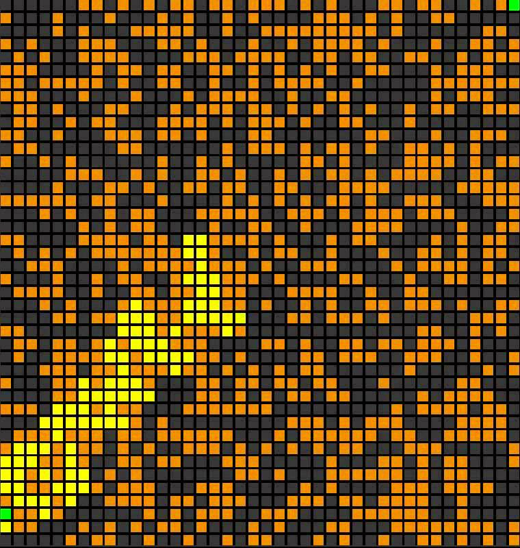
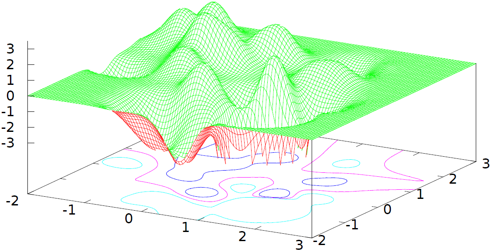

Deutsch's Algorithm

Grover's Search Algorithm

HHL
Quantum algorithms can be developed on top of a framework based on combining quantum gates. We can summarise the whole process in the following steps:
Notice all algorithms are probabilistic ones, not deterministic. That means, we are not guaranteed that they will work for 100% of the cases, but we do have a high probability of success.
Suppose there is a function f that maps from to . We wish to know whether the function is injective or not (i.e. is not equal ). Opposing to the classic context, one can not examine the function on different results. The main idea is to consider the gate U as a matrix function operator (to be visualised as a gate) applying the function f to the given inputs.
The problem could be solved by evaluating f(0) f(1). The XOR function is the direct equivalent of asking whether f is an injection. Even though the function is evaluated twice in a classical context, the quantum context allows us to evaluate it only once.At the moment we know we want to obtain a superstate that will be extracted after measurement to f(0) f(1). We only need a superstate that will be transfered to this particular point. The input is 0 and 1 along with any combination.
Firstly, we have to keep in mind that we can process two states simultaneously. We need a matrix(gate) that gives us a state that has an equal probability to be measured as a 0 or 1. We can observe that the Hadamard gate gives us a good beahaviour:
Looking over the effect of the Hammond gate over the 0 and 1 states, we can observe that both bits will be driven to balanced superstates. Also, the products differ only by a sign.
At this moment, we have all the information: the input, the desired output, some means of transformations to balanced superstates, and finally, the application of function f.
We will examine the circuit proposed by David Deutsch by looking at each step on the "pipeline".
The pipelining mechanism can be expressed strictly in terms of matrices. We have 2 inputs that will be composed using the tensor product. Afterwards, each pair of binary gates will be multiplied (tensor product) so that we keep applying each matrix operator to the combined state. (4-by-1 matrix) Finally, the upper result will be measured.
Let us look at the involved states step by step. Firstly, our state will be the product of the given input qubits.
In the first step, we need to apply the Hadamard transformation to each of the matrices. Observe that it distributes the probabilities evenly.
Observe the effect of function f over the state we have obtained. Let us study the effect of function f on the element . We only need to apply the tensor product of the current value with the function application. More concisely, the function will look just as .
Applying the property to both elements will give two comopsitions similar to the former one. Finally, we need just analyse the outcome of the function in each case.
Remember that each gate is reversible, so Hadamard matrix should put its resulting state to the original input. Therefore, reapplying the Hadamard matrix back will drive us into one of the initial states (0 or 1). We are particularly interested in the 0 as it will multiply to a null term after measurement.
Finally, measuring the top bit will give either 0, or another result. In the case the result is 0, we know that f is a constant function.
Go to top
Grover’s Search is an algorithm based on searching an element in a list, faster than just going through all the elements and stop at some point. Using a naive brute force strategy of just taking element by element and break at some point when we find an answer will result to an average of operations per searching. Grover’s Search Algorithm aims for such operations.
Imagine that you are given a function and you are assured that there exists exactly one binary string such that if and otherwise. f will be given to us as the unitary matrix that takes .
In terms of matrices this becomes:
The states are:
Grover’s search algorithm uses two tricks. The first, called phase inversion , changes the phase of the desired state. It works as follows. Take and place the bottom qubit in the superposition state:
In terms of matrices, this becomes:
Since both and H are unitary operations, it is obvious that phase inversion is also a unitary operation.
The states are:
What we need now is a way of boosting the phase separation of the desired binary string from the other binary strings. The second trick is called inversion about the mean. Basically, we are inverting each element around the average (the mean of all elements).
Example: Consider a sequence of integers . The average is . Inverting a number around the average is equivalent with adding the difference between the average and the number to the given mean. That is each element becomes . ( becomes ).
Let us write this in terms of matrices. Consider the vector and the matrix:
It is easy to see that A is a matrix that finds the average of a sequence: (this is for the given vector and n = 5).
Starting from this basic matrix, we can construct now the “inversion about the mean matrix”:
If the previous matrix transformed each element into the average, the formed directly apply the second trick of Grover’s search algorithm.
Doing the inversion about the mean matrix only once is not enough in order to have a proper answer (as it is said above, the purpose of it is just boosting the phase separation).
Grover’s algorithm consists of repeatedly applying the boosting process a sufficient amount of times. Before discussing the exact complexity and number of steps, let’s analyze the final scheme of Grover’s algorithm:
The final question is who is T? (or how many times do we need to apply step 3). The answer is . If you do it more than that, the process will “overcook”. The proof for this fact use geometry representation which is beyond our current goal.
Go to top
We have now a general idea about the physical implementation, scaleability and a real-world theoretical example. The next step is to try to dive into the intuition behind a more complex algorithm.
The problem is solving a system of linear equations. In order for us to be able to model it in the quantum context, we will put it in the following form:
The matrix A and the vector b are known and we want to find the vector x. In the classical context this problem is well-known and its complexity is polynomial. Our main goal is to find the inverse of the matrix A.
The most well known algorithm is Gaussian elimination. The algorithms reduces the augmented matrix each line of the matrix in row echelon form. Each transition between two matrices represents adding up 2 equations. Finally, we get each element of the solution vector from bottom to top.
The complexity analysis is straight forward, we iterate through N lines, reducing O(N) in O(N) places. It is worth mentioning that in a sparse matrix(meaning the number of non-zero element in each row is much smaller than the number of element in that row), there are algorithms that run in O(N^2 log N).
The intuitive advantage of solving the exact same problem in the quantum setting is relying on the fact that we can process multiple states at a moment. Supposing we can successfully represent a state of size O(N) as a set of qubits, the number of necessary qubits is O(log N).
Supposing we work with an exponential number of states, we can not naturally parse the computed result as this will slow the total speed of our algorithm from polynomial to exponential. Fortunately, we can get sufficient information about the properties of the resulting state from the eigenvalue of the observable. As an example if one has one terrabit of data in the output vector, we can encode the result in around 40 qubits. On the one hand, listing the resulting data will take the original size.(i.e. listing one terra of data). On the other hand, measuring the properties of the observable will give us the possibility to look at particular properties(i.e. eigenvalues) that we are interested in.
From the fact that the matrix A is Hermitian, we know that , therefore A is reversible. Furthermore, the sparse Hamiltionian algorithm is applicable in this context. [paper]
A Hamiltonian evolution can be written as , where matrix A is computed with an relative error denoted as . An intuitive reasoning is that there is a mapping from the matrix U to the complex space of vectors with modulus of 1. Having a Hamiltonian decomposed as a sum , we can rewrite the evolution relative to each component of U at the moment t: . Furthermore, Dominic W. Berry, Graeme Ahokas, Richard Cleve and Barry C. Sanders propose a logarithmic complexity method for sparse matrices of finding a series of form which simulates the previous evolution bounded by the given error. [paper]
The details of the method are not as straight forward as the previous algorithms, but we want to empathise its purpose:
We know from linear algebra that if a matrix A is diagonalizable, we can find it's inverse in a simple way.
. Since A is diagonalizable, then there exists an invertible matrix U such that , where are the eigenvalues of A. We get . Hence, .
Having defined the transformations above, we can see that the Hamiltonian simulation scales over the whole sum. The paper [paper2] determines the eigenvalues using the momentum simlarly to the use of the evolution over time. Intuitively, the momentum resembles to the classical one, therefore applying the transformation over it should yeld some intrinsec property of the matrix. This property has been demonstrated to be(in the same paper) the set of eigenvalues.
Let's denote: Then: .
Appling over the value gives us, where are the eigenvalues of A and is decomposed in terms of the basis.
Applying the transformation once will give us the eigenvalues. By [paper3], each eigenvalue will be introduced in a similar way, obtaining the result:
If we apply the phase algorithm transformation we can compress the decomposition of , getting the zero qubit on right hand side - - and then .
Shortly, applying the phase algorithm in the right way will give us the eigenvalues and eigenvectors. Appling its inverse after rewriting the evolution for each member of the sum will give us the inverse of the matrix.
As we mentioned initally, even if we obtained the matrix, we would like to measure some of its "properties". Let a property be an observable M, then we can apply:
Go to top